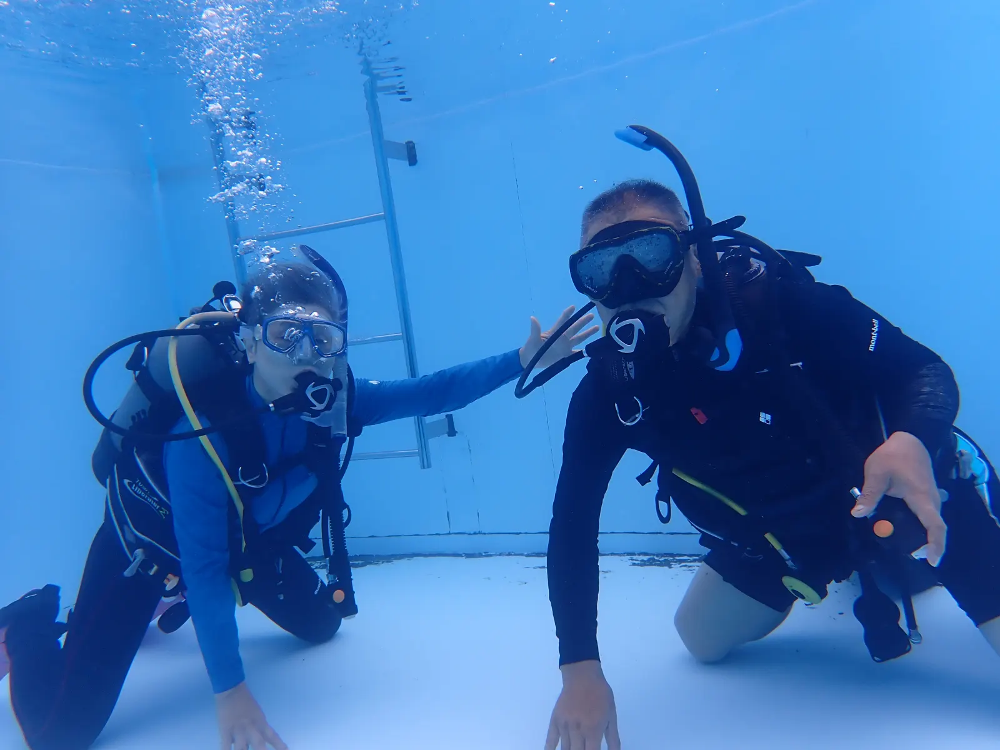

20 MIN. / BUOYANCY
PPB
力を抜ける浮力へ。
中性浮力は、止まれること。水底に触れず、呼吸と小さな操作で位置を保てる状態を目指します。

このダイブのゴール
水中で自分の浮力を診断できる
- 適正ウエイトの確認手順を説明できる
- BCD・呼吸・姿勢の役割を分けて考えられる
- 浮き始め、沈み始めに慌てず小さく修正できる
WHY IT MATTERS
中性浮力は「きれいに浮く技」ではなく、安全を支える土台
深度を意図どおりに保てると、耳抜きに違和感があれば止まり、バディを待ち、残圧やコンピューターを落ち着いて確認できます。反対に浮力が崩れると、深度・ガス消費・バディとの距離・水底への接触が同時に崩れやすくなります。
予期しない潜降や急浮上を防ぎ、耳抜きや安全停止のために水深を選べます。
余分なキックと水の抵抗が減るため、呼吸が乱れにくく、計画したガスを使いやすくなります。
手や膝で支えず、フィンや垂れた器材を水底・生き物から離せます。
AOW SCOPE
今回行うのは、PPB SPの「ダイブ1」
適正ウエイトを決め、器材を流線形にまとめ、呼吸・BCD・ウエイト配置を使って安定した浮力とトリムをつくります。
- ウエイト量の見積もり・位置・配分
- プレ／ポストダイブ浮力チェック
- ゆっくりした潜降と中性浮力
- 60秒ホバリングとトリム調整
今回はダイブ1の達成条件に集中します。PPBスペシャルティ認定には、さらにダイブ2の修了が必要です。
CORE 01
まずウエイト。次に姿勢。最後に呼吸。
重すぎるウエイトをBCDの空気で相殺すると、体積と抵抗が増え、操作量も大きくなります。上達の近道は「頑張って沈む」ことではなく、必要な重さを確認することです。
- 装備をすべて着ける使用するスーツ、シリンダー、アクセサリーまで条件を揃えます。
- BCDを空にして静止足の着かない場所で、通常の一呼吸を保ち、目の高さ付近に水面が来るか確認します。
- 息を吐いてゆっくり沈むインストラクターの管理下で少しずつ調整。終盤の軽くなったシリンダーでも再確認します。
DIVE 1 PERFORMANCE
止まるだけでなく、範囲内に保つ
手やフィンで支えず、通常呼吸を続けながら深度を微調整します。器材や身体を水底・水面に触れさせないことも達成条件の一部です。
ウエイト量だけでなく、配置を変えて水平・垂直・頭が少し高い・足が少し高い姿勢を試し、自分のバランスを理解します。
THREE CONTROLS
操作は「大・中・小」で使い分ける
深度を変えると圧力でスーツやBCD内の気体体積が変わります。浮上中は膨張が次の浮上を招くため、早めに少量ずつ排気します。
THE PRINCIPLE
深度が変わると、変化が次の変化を呼ぶ
浮力は「押しのけた水の重さ」と「ダイバー全体の重さ」の関係で決まります。BCDやウェットスーツ内の気体が大きいほど多くの水を押しのけ、浮力は増えます。重さと浮力がつり合えば中性浮力です。
圧力が上がる
→気体が圧縮
→浮力が減る
→さらに沈みやすい圧力が下がる
→気体が膨張
→浮力が増す
→さらに浮きやすいだから大きく崩れてから一気に直すのではなく、変化の始まりを察知し、早めに少量の給気・排気を行い、反応を待ちます。呼吸による上下動には少し時間差があるため、連続して操作すると行き過ぎます。
CORE 02
「前と同じウエイト」で決めない
多くのウエイトが必要な装備では、複数のウエイト・システムを使うと位置と配分の選択肢が増えます。ただし緊急時に捨てる方法を、バディと事前に確認します。
FAILURE CHAIN
「少し重いだけ」が、なぜ問題になるのか
- 01過剰なウエイト
沈める安心感は得ても、中性にするためBCDへ余分な空気が必要になります。
- 02抵抗と姿勢の悪化
膨らんだBCDや立ち気味の姿勢は水の抵抗を増やし、泳ぎ続けないと深度を保てなくなります。
- 03呼吸・ガス消費の増加
運動量が増えると呼吸が大きくなり、浮力も揺れ、残圧の減りも速くなります。
- 04余裕の低下
浮力操作へ注意を奪われ、バディ・深度・残圧・生き物を見る余裕が減ります。
水中の判断：まずキックを止める → 深度計と呼吸を確認する → 小さく操作する → 数秒待って結果を見る。大操作を重ねない。
CHECK / 7 QUESTIONS
水中の判断を先に練習
選ぶとすぐに理由が表示されます。全問正解でレッスン完了です。